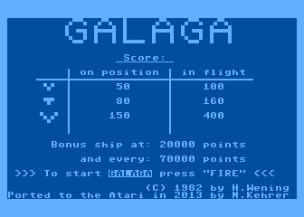
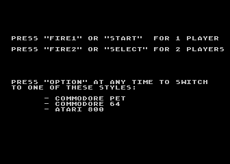
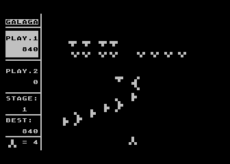
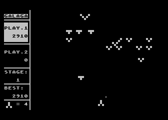
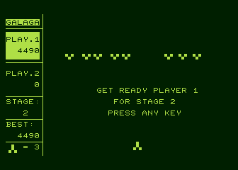
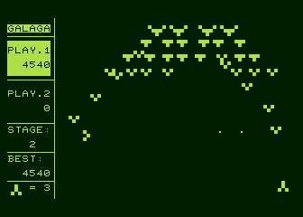
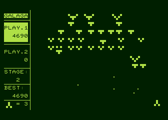
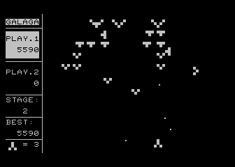

Galaga for the Atari 800
In 1982 the German programmer Henrik Wening made a great version of the arcade game Galaga for
the Commodore PET computer. The PET, being more a business-oriented computer, had only
very limited graphics and sound capabilities. So the game is graphically very simple but the
gameplay is great. There was also a version of it for the Commodore 64, which I
played for many hours back in the eighties. You can read more on the original PET Galaga
version on
Henrik's homepage
(in German).
I now ported Henrik's great game to the Atari 800XL computer. In the Atari version
you can switch between three different fonts (PET, C64, Atari). The game is played
with the joystick.
The program can be downloaded as an executable file here: galaga.xex
It is also available as an atr file here: galaga.atr
Below you see some screenshots of the running game:
|
 |

|
|
 |

|
|
 |

|
|
 |

|
Have fun!